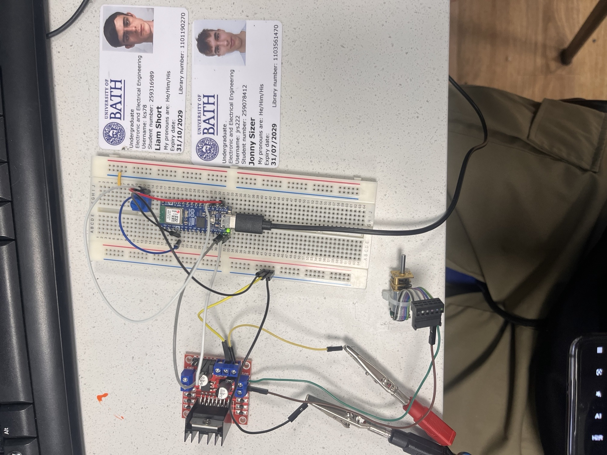

DC motor control using Arduino
Introduction
This page showcases the development of a DC motor controller using an arduino ESP32.
PID Controller
Advanced Tasks
This circuit uses a potentiometer as a single control input to manage both the direction and speed of a DC motor through an Arduino Nano ESP32 and a motor driver board. The potentiometer is wired as a voltage divider, with its output connected to an analog input pin. The microcontroller continuously reads this value and divides it into three regions. When the potentiometer is turned to the lower range, the Arduino commands the motor driver to rotate the motor in reverse, applying a PWM signal to control speed based on how far the knob is turned. In the central range, the input falls within a dead zone, and the Arduino disables the motor driver outputs, bringing the motor to a stop. When the potentiometer is turned to the upper range, the motor rotates forwards, again with speed proportional to the potentiometer position. The motor driver board allows safe control of the motor by handling higher currents and providing direction switching, while the Arduino processes the analog input and generates the appropriate control signals.
Hardware

Wiring Diagram

Arduino Code
Initial Tasks
GenAI Acknowledgement Statement
GenAI was not used in the preparation of this assignment.
Skills Claimed
- Embedded systems design — claimed at I am claiming this skill at ApplicationPlace feedbackCloseFeedback - Annotation: Embedded systems designClosePlace feedback